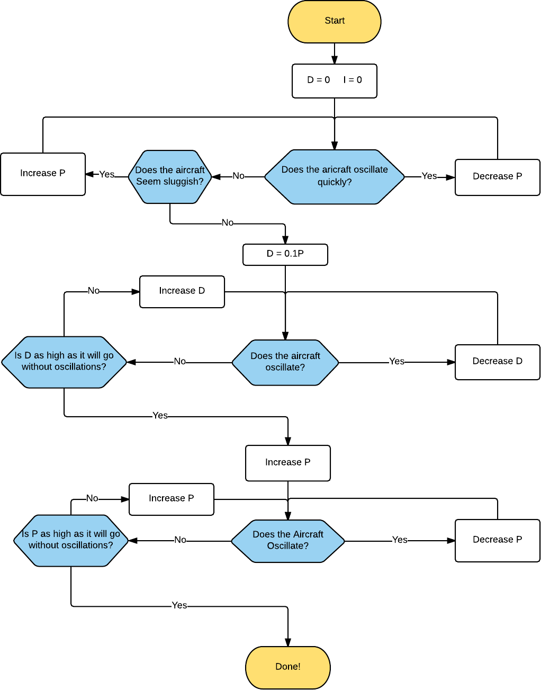
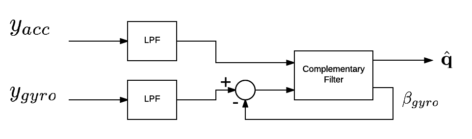

Improving Performance¶
ROSflight supplies several methods to improve the performance of your aircraft. Tuning gains, adding feed-forward torques, and tuning the estimator are three ways to get your aircraft flying great!
Gain Tuning¶
Because there are a wide variety of multirotors out there, no one set of PID controller gains will be optimal for all vehicles. The default set of gains is relatively conservative for most platforms, and should be somewhat airworthy in most cases. However, depending on the inertia-to-torque ratio on your MAV, you may have to change these gains considerably. There are some great tutorials online on multirotor gain tuning; this is another tried-and-true method used to great effect at BYU.
If you are unfamiliar with PIDs, you should probably go read about them before trying to tune a multirotor. Getting an understanding for what is going on will definitely guide your decision making process as you try to find better gains.
While tuning controller gains, it is very likely that the multirotor will oscillate out of control. To handle this scenario, we generally add what we call "training wheels" to the multirotors we are tuning. These amount to thin carbon rods in the shape of an X zip-tied to the landing gear. This widens out the base of the multirotor so if you come down on a hard oscillation, chances are the vehicle will land upright, hopefully without a prop strike, or worse, battery damage with a thermal runaway event. If the battery is not tucked inside the main frame, it is wise to add some foam as protection to the battery.
Here is a video of a maiden flight of ROSflight with "training wheels" attached.
Now, for the procedure on tuning.
Tuning Roll and Pitch angles¶
Here is a flowchart describing my PID tuning process for roll and pitch:

You may want to do another D-tuning iteration. Additionally, sometimes it is helpful to do a little tweaking on roll and pitch separately to eek out a little more performance from the differences in roll and pitch dynamics of your vehicle.
Notice that we did not include any I tuning. As a general rule, try to keep the I gain as low as possible. It will always slow your response rate to input, and it can induce low frequency oscillations.
You should only have I gain on roll and pitch if one of the following is true:
- You expect your CG to change, and/or
- You expect your rotor geometry to change
Both of these are pretty rare. Instead, use your RC transmitter to trim the aircraft so it hovers with no stick input. In the RC trim calculation section, we will use the RC trim to calculate a feed-forward torque on the roll, pitch and yaw rates.
Tuning Yaw rate¶
Dynamically and algorithmically, using a D gain in yaw-rate control has no significant advantage. Controlling with derivative requires differentiating gyro measurements, which tends to be pretty noisy. In our experience, putting D in rate controllers on multirotors has always decreased performance.
Tuning yaw rate is generally pretty easy. Basically, keep cranking it up until you feel like it's "locked in". Sometimes, a little bit of I (on the order of 0.1P) can help with this as well.
The problem with too much P on yaw rate generally manifests itself in motor saturation. Some, especially larger, multirotors have problems getting enough control authority in yaw with the propellers being aligned flat. After you are done tuning, you might want to look at a plot of motor commands during a fairly aggressive flight. Underactuated yaw will be pretty obvious in these plots, because you will see the motor commands railing. To fix this, you can put shims between the arm mounts and the motors to tilt the motors just a little bit in the direction of yaw for that motor.
RC trim¶
In the vast majority of cases, your multirotor will not be built perfectly. The CG could be slightly off, or your motors, speed controllers and propellers could be slightly different. One way to fix this is by adding an integrator. Integrators get rid of static offsets such as those just mentioned. However, as explained above, integrators also always slow vehicle response. In our case, since this offset is going to be constant, we can instead find a "feed-forward", or equilibrium offset, torque that you need to apply to hover without drift.
Use the RC transmitter to find the "equilibrium torques" about the x, y, and z axes to keep the multirotor level. This is done by trimming the aircraft with the RC trims. These are usually the little switches next to the sticks on your transmitter. Adjust these until you can hover the multirotor without touching the sticks.
Next, land the multirotor, disarm, center the sticks and perform a trim calibration with rosservice call /calibrate_rc_trim. ROSflight then uses the trim settings on your transmitter to find these feed-forward, or equilibrium, torques that need to be applied post-controller to keep the multirotor level. These torques will be applied to all future commands (both from the companion computer and RC), so you will need to zero out your transmitter trims after calibration.
Estimator Tuning¶
ROSflight uses a non-linear complementary filter, based on the quaternion implementation of "Non-linear complementary filters on the special orthogonal group" by Robert Mahony1, to estimate attitude and angular rates. The implementation has been improved with suggestions from "Attitude Representation and Kinematic Propagation for Low-Cost UAVs" by Robert Casey2. A write-up of the derivation and implementation details can be found in the LaTeX report in reports/estimator.tex. (You'll need to be able to compile LaTeX sources to view the PDF).
In addition to the complementary filter, accelerometer and gyro measurements are filtered using a simple low-pass filter (LPF) to cut out noise from vibrations. A block diagram of the estimator is shown below for reference. y_{gyro} and y_{acc} are gyro and accelerometer measurements, respectively and \beta_{gyro} is the estimated gyro biases.

Tuning the Low-Pass Filter Gains¶
The ACC_LPF_ALPHA and GYRO_LPF_ALPHA parameters are used in the following low-pass-filter implementation (see lines 98-106 of estimator.c):
where y_t is the measurement and x_t is the filtered value. Lowering \alpha will reduce lag in response, so if you feel like your MAV is sluggish despite all attempts at controller gain tuning, consider reducing \alpha. Reducing \alpha too far, however will result in a lot of noise from the sensors making its way into the motors. This can cause motors to get really hot, so make sure you check motor temperature if you are changing the low-pass filter constants.
Tuning the Complementary Filter¶
The complementary filter has two gains, k_p and k_i. For a complete understanding of how these work, we recommend reading the Mahony Paper, or the technical report in the reports folder. In short, k_p can be thought of as the strength of accelerometer measurements in the filter, and the k_i gain is the integral constant on the gyro bias. These values should probably not be changed. Before you go changing these values, make sure you completely understand how they work in the filter.
If you do decide to change these values, you should stick to the following rule of thumb.
External Attitude Measurements¶
Because the onboard attitude estimator uses only inertial measurements, the estimates can deviate from truth. This is especially true during extended periods of accelerated flight, during which the gravity vector cannot be measured. Attitude measurements from an external source can be applied to the filter to help improve performance. These external attitude measurements might come from a higher-level estimator running on the companion computer that fuses additional information from GPS, vision, or a motion capture system.
To send these updates to the flight controller, publish a geometry_msgs/Quaternion message to the external_attitude topic to which rosflight_io subscribes. The degree to which this update will be trusted is tuned with the FILTER_KP_EXT parameter.
-
Mahony, R., Hamel, T. and Pflimlin, J. (2008). Nonlinear Complementary Filters on the Special Orthogonal Group. IEEE Transactions on Automatic Control, 53(5), pp.1203-1218. ↩
-
Casey, R., Karpenko, M., Curry, R. and Elkaim, G. (2013). Attitude Representation and Kinematic Propagation for Low-Cost UAVs. AIAA Guidance, Navigation, and Control (GNC) Conference. ↩